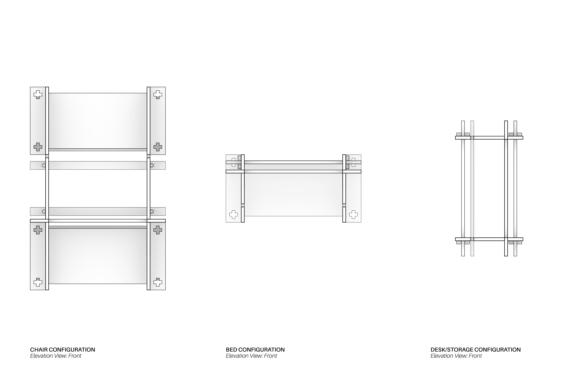
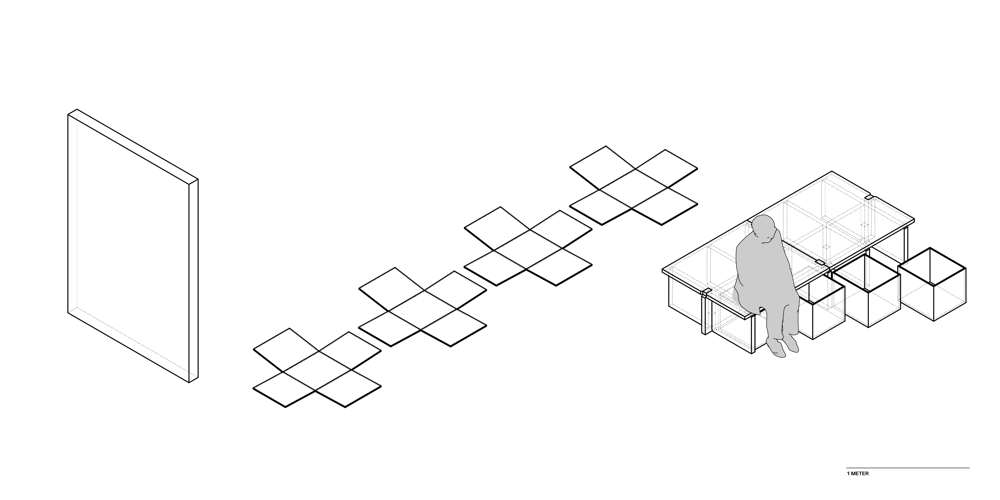
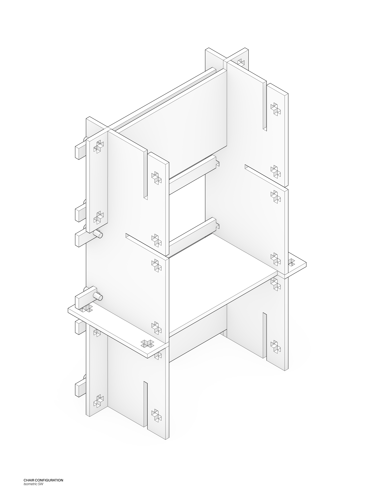
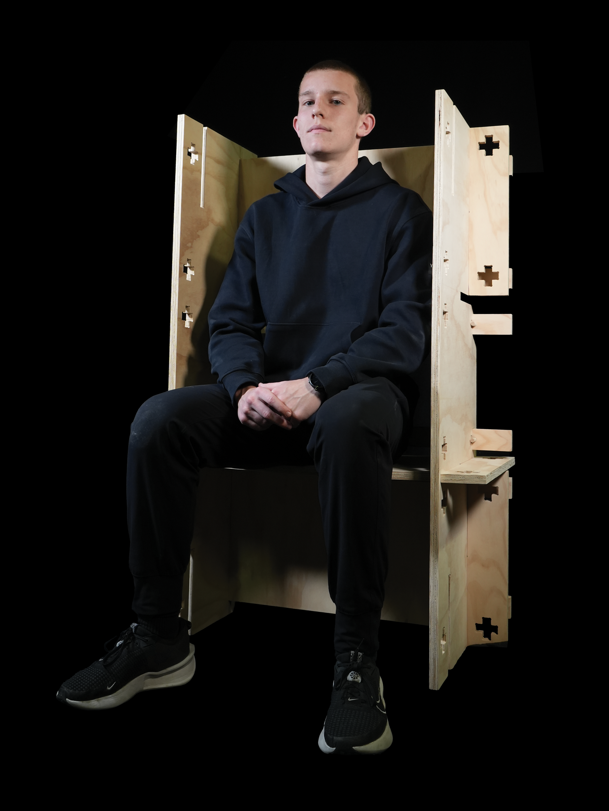
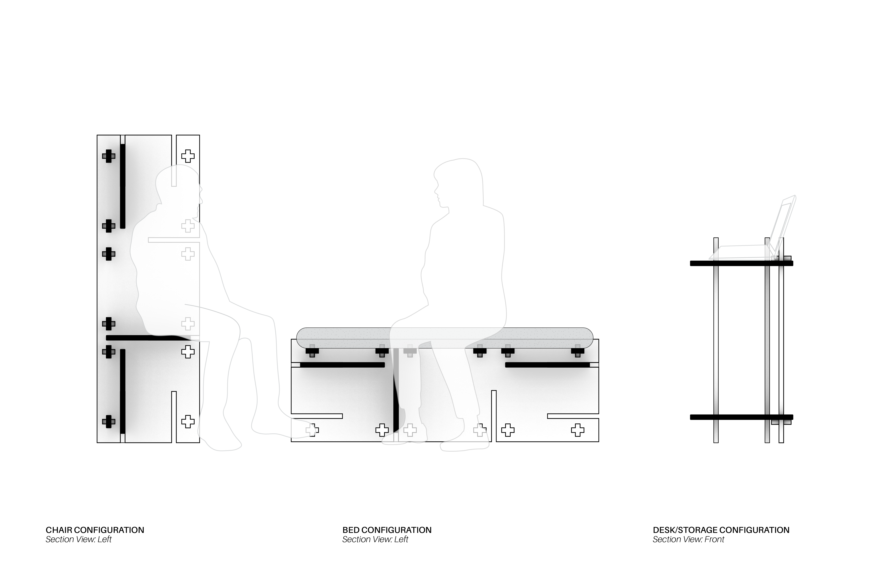

Spring 2026
This three-part project took course over about 5 weeks with group and individual studies, sketching, and model-making. First, our group was assigned to study furniture by the Japanese architect Shigeru Ban. I studied his cardboard bed design, a simple piece created to be mass shipped and assembled to natural disaster shelters. The simplicity yet complexity introduced by the interlocking pannels were the key inspiration for the next steps. After the study, we individually developed sketches and models for a proposal. Our groups then re-formed to combine our ideas together into one concept to move foward with. We took the pannel structure composed of spinal and rib pieces from Ban's bed and make it modular, allowing the pannels to slide in-and-out to create an array of differnet pieces depending on orientation and the configuration of the pieces. Additionally, six long planks were introduced to add structure and complexity to the design, which lock in place with friction-fit pegs. Each can slide in in either direction through the plus-shaped holes. The final design was constructed from a 4x8 piece of plywood that was cut using a CNC router. After some light sanding, the pieces were ready to be assembled into any desired configuration.

Section drawing of the furniture.



